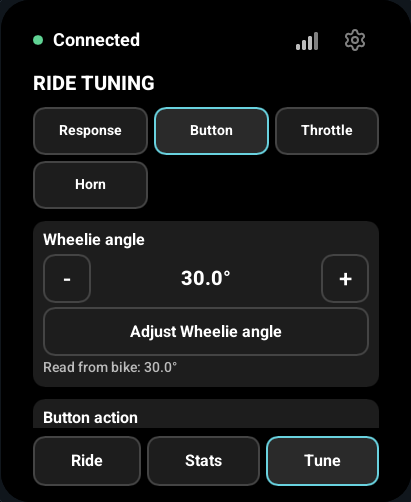
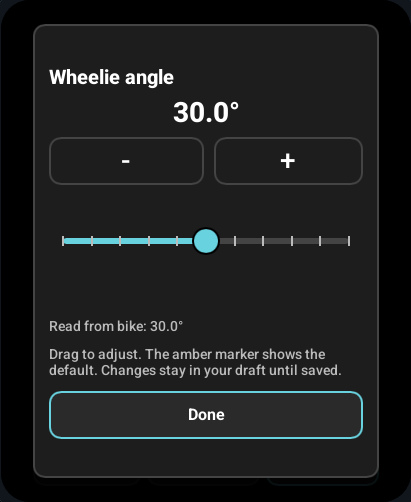
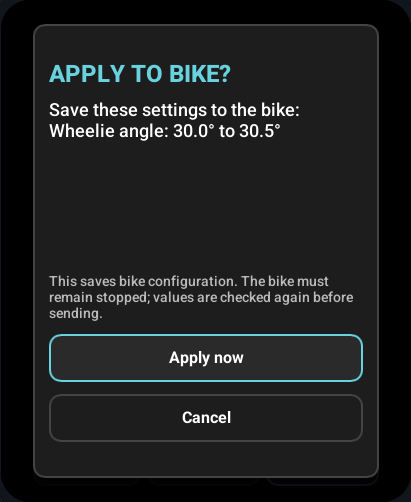

Use the bottom tabs or swipe horizontally to move between Ride, Stats and Tune. Tap the cog in the upper-right corner for Settings. Scroll vertically on longer pages.

Ride
Ride shows speed, battery, power, pitch and connection state. Speed uses your saved km/h or mph preference; temperature units are set separately. Pitch is shown in degrees.
Trip and odometer readings sit above the speedometer in portrait. Larger landscape screens put the speed dial on the left and distance readings above the telemetry cards on the right. The layout adapts to the display and orientation.
Connected describes the bike connection. A reading of -- means data is unavailable or out of date, even if the connection is still present. It never means a measured zero.
Stats
Stats is read-only. Scroll to see more readings; wide screens show more cards side by side.
| Group | Readings |
|---|---|
| Ride and distance | Speed, power, trip and lifetime distance. |
| Electrical and energy | Voltage, battery charge, input/motor current, duty cycle, electrical RPM (eRPM), consumed/charged Ah and Wh. |
| Temperatures and attitude | Controller/motor temperatures, pitch and roll. |
| Controller | Position, controller ID/count and reported uptime. |

Battery management system (BMS)
If your controller supplies BMS data, scroll further for pack values, cell voltages, balancing and temperatures. SOC means state of charge; SOH means state of health.


The display checks for BMS support when the bike becomes ready and requests readings once per second while Stats is open. During a phone connection, it only polls BMS data if support was already established in that vehicle session.
These readings are cached by the VESC and have no original measurement timestamp. A newly received reply does not prove the battery measurement is current. Real BMS hardware has not yet been validated with this display.
Tune
Tune is currently available for supported Wheelie Fun Bike configurations. For wheel-e, use VESC Tool; generic VESC has no tuning controls here.
Before editing, stop the bike, unlock the display and disconnect the phone proxy. Wait for fresh readings and clear any controller fault. The display must successfully read a supported bike configuration before enabling tuning. If it cannot, read the status message and use Retry.
Choose a preset or adjust individual controls
The quick response choices are Eco, Cruise and Sport. A bike configuration that differs from those presets is labelled Custom.
| Section | What you can adjust |
|---|---|
| Response | Throttle strength, brake strength and responsiveness. |
| Button | Wheelie, Turbo, Horn or Disabled; wheelie angle and maintain-on-throttle/brake options. |
| Throttle | Throttle/brake tilt, tilt angles, anti-loop angle, linked button angle and wheel lift resistance. |
| Horn | Strength and musical note, when Horn is the selected button action. |
The speed-limit slider covers 5–35 mph plus No limit, subject to the bike's limits. It displays your preferred units. The bike stores whole mph, so km/h steps can vary in size.
Tap Adjust for a larger slider editor, or use the quick −/+ buttons. Done returns to Tune and keeps the draft; it does not save to the bike. The amber slider marker shows the reference default. Read from bike values show what the bike reported, separately from your edits.


Unavailable or linked controls stay visible with an explanation. A custom value between supported slider stops stays unchanged until you move that slider. See the WFB ride-controls reference for exact ranges and mappings.
Save or discard changes
- Make your edits. They remain a draft on the display.
- Tap Apply or Save tuning changes.
- Review the list of changed values and confirm.
- Wait for Saved profile verified by readback before treating the save as confirmed.

Before saving, the display reads the bike again. If another app changed its settings, the save is cancelled and the new values are shown for review. After sending, it compares the returned profile with your requested settings. The verified message confirms the reported values; it does not test whether they survive a bike power cycle.
Discard tuning draft restores the last read profile. Reading the bike again also replaces unsaved edits.
If a save is interrupted, it may already have reached the bike. Read the profile again before retrying. Connecting a phone or changing the bike connection invalidates pending tuning work.
Vehicle settings
Open Settings > Vehicle to select the connection and integration. Auto detects supported WFB or wheel-e packages, then falls back to standard VESC readings. Disconnect or forget the bike before changing the integration.
Check the main-controller discovery status here. Find main controller again repeats discovery when the link is available. See connections for Bluetooth, CAN and UART setup.
Settings
The settings list groups Display, Units, Vehicle, Screen lock, Phone connection and System controls. Preferences are saved across restarts.

| Setting | What to do |
|---|---|
| Orientation | Tap to cycle through 0°, 90°, 180° and 270°. Touch rotates with the screen. |
| Speed units | Choose km/h or mph. |
| Temperature units | Choose °C or °F independently of speed units. |
| Brightness | Set normal brightness; waking the locked display restores this level. |
| Vehicle | Choose a bike, connection and integration. |
| Screen lock | Set, change or remove a PIN/pattern; choose the locked-screen timeout. |
| Phone connection | Enable the BLE proxy and, where available, edit its name. See phone setup. |
| Wi-Fi | Connect to a listed or hidden network, or forget a saved network. |
| Firmware updates | Check for and install a matching release. See updates. |
| About | Find the firmware version, board identity and diagnostics. |
Touch and gestures
- Swipe horizontally between Ride, Stats and Tune. There is no wrap from Tune back to Ride.
- Short or reversed swipes return to the current page.
- Drag vertically to scroll Stats, Tune and Settings.
- After changing orientation, lift your finger before starting a new gesture.
Locking and waking
Set up a PIN or pattern under Settings > Screen lock. Lock screen protects local controls; Lock bike and screen, when supported, also requests a bike lock.

When the locked screen goes black, tap once to wake it, lift your finger, then enter the credential. The wake tap cannot activate a control. See PINs, patterns and pairing for setup and confirmation behavior.
Bike BLE signal
Bars beside the phone indicator show the bike's Bluetooth signal. Fewer bars mean a weaker signal; one active bar is yellow. Bars are hidden for CAN/UART or when no valid signal reading is available. They do not measure distance or throughput.
When a phone is connected
A green phone icon beside the cog indicates an authorized phone connection. Ride readings normally continue, though busy phone traffic or firmware transfers can temporarily pause them.
Disconnect the phone before reading or saving tuning, requesting a bike lock, or updating display firmware. The phone selects its own CAN controller. See connections for pairing and proxy behavior.